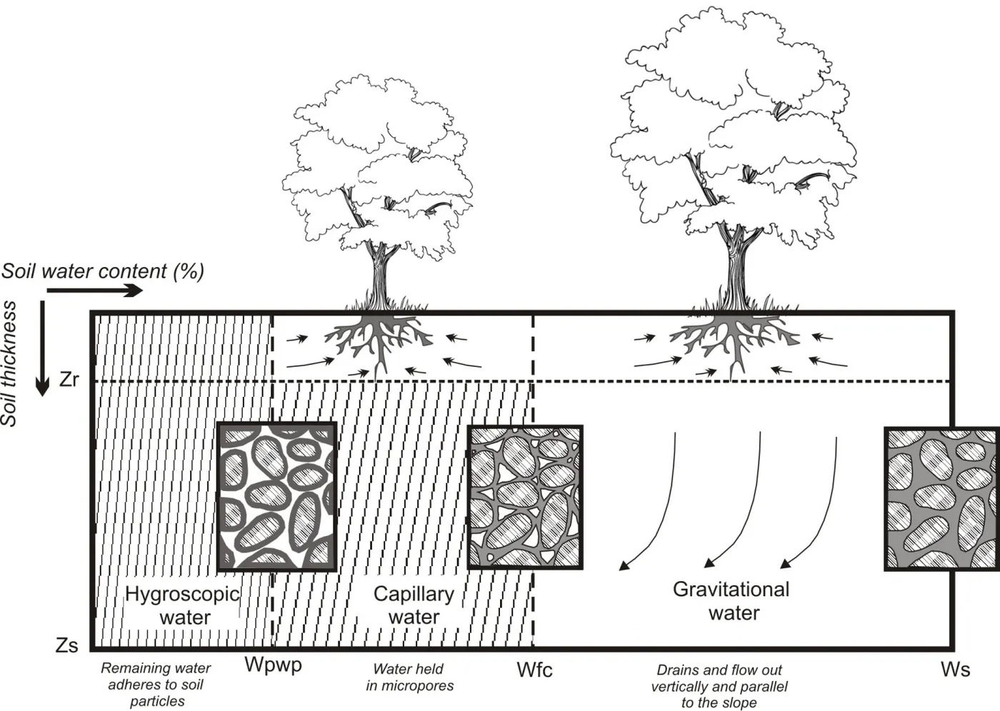
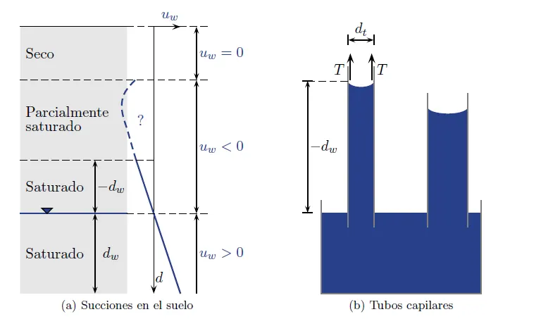
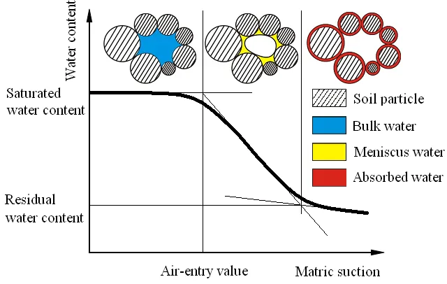
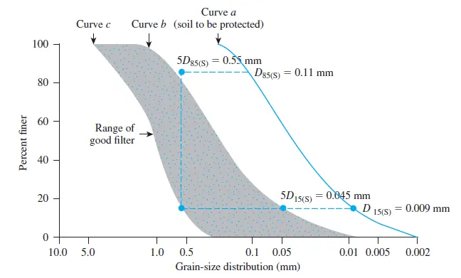

El agua en el suelo y en el macizo rocoso#
Importante
Objetivos de aprendizaje
Describir los estados del agua en el suelo, la capilaridad y la succión en suelos parcialmente saturados.
Aplicar la ley de Darcy y estimar la conductividad hidráulica de suelos y macizos.
Calcular la conductividad equivalente de un medio estratificado.
Interpretar una red de flujo y calcular el caudal de filtración.
Explicar las fuerzas de filtración, el sifonamiento y los criterios de diseño de filtros.
Por qué el agua importa#
La mayoría de los problemas geotécnicos son, en el fondo, problemas de agua. La presión del agua en los poros reduce el esfuerzo efectivo y con él la resistencia al corte; el flujo arrastra partículas y produce erosión interna; los cambios de humedad hacen expandir o colapsar ciertos suelos; y la lluvia es el principal detonante de los deslizamientos en Colombia. Para el geólogo, el agua subterránea es además una variable que se puede predecir a partir de la geología: la estratigrafía, la estructura y el perfil de meteorización definen por dónde fluye el agua y dónde se acumula.

Figura 20 El agua es el factor común en la mayoría de las fallas geotécnicas.#
El agua en el ciclo hidrológico y en el perfil de suelo#
La lluvia que llega a una ladera se reparte entre la intercepción por la vegetación, la escorrentía superficial, la evapotranspiración y la infiltración. El agua infiltrada atraviesa primero la zona no saturada o vadosa, donde los poros contienen agua y aire, y alcanza la zona saturada, limitada en su parte superior por el nivel freático, donde la presión del agua es igual a la atmosférica. Por debajo del nivel freático la presión de poros es positiva; por encima es negativa, y se denomina succión. Cuando la capacidad de infiltración del suelo se excede o cuando el agua encuentra un contraste de permeabilidad, como el contacto entre un coluvión y un saprolito, se forman niveles colgados y flujo subsuperficial paralelo a la ladera.


Figura 21 Estados del agua en el perfil de suelo, desde la zona seca hasta la saturada.#
Tensión superficial, capilaridad y succión#
La tensión superficial es la energía necesaria para aumentar la superficie de un líquido por unidad de área. Surge porque las moléculas de la superficie reciben una fuerza neta de atracción hacia el interior, mientras que en el seno del líquido las fuerzas se anulan. Combinada con la adhesión entre el agua y las superficies sólidas, produce la capilaridad: en un tubo de diámetro \(d\) el agua asciende hasta una altura
donde \(T\approx0{,}073\) N/m a 20 °C y \(\alpha\) es el ángulo de contacto. Para agua y vidrio limpio (\(\alpha\approx0\)) resulta aproximadamente \(h_c\,(\text{m})\approx 0{,}03/d\,(\text{mm})\). En los suelos los poros se comportan como tubos capilares irregulares, y Hazen propuso estimar el ascenso capilar con \(h_c=C/(e\,D_{10})\), con \(C\) entre 0,1 y 0,5 cm². En arenas gruesas el ascenso es de pocos centímetros; en limos y arcillas puede alcanzar varios metros.


Figura 22 Efectos capilares y succión en el suelo.#
En la zona capilar el agua está a presión negativa (\(u=-\gamma_w z\) sobre el nivel freático en condiciones hidrostáticas). Esa presión negativa, o succión matricial \((u_a-u_w)\), tira de las partículas entre sí y genera una resistencia adicional que en la práctica se percibe como cohesión aparente. Es la razón por la que la arena húmeda permite hacer castillos que se desmoronan al secarse o al saturarse. Además de la matricial existe una succión osmótica, función de la química del fluido de poros.
La relación entre el contenido de agua y la succión se describe con la curva característica suelo-agua. Muestra que el suelo permanece saturado hasta un valor de entrada de aire y que, a partir de ese punto, pierde agua rápidamente. La curva presenta histéresis: el secado y el humedecimiento siguen caminos diferentes.


Figura 23 Curva característica suelo-agua.#
Succión y deslizamientos tropicales
En las laderas andinas los suelos residuales suelen estar no saturados durante buena parte del año, y la succión aporta una fracción importante de su resistencia. Durante una lluvia prolongada el frente de humedecimiento avanza, la succión desaparece y la resistencia cae sin que necesariamente se forme un nivel freático. Este mecanismo explica muchos deslizamientos superficiales que se producen en laderas donde los piezómetros no registran presiones positivas.
Flujo unidimensional y ley de Darcy#
Carga hidráulica#
Según el principio de Bernoulli, la carga total en un punto de un fluido en movimiento es la suma de la carga de elevación, la de presión y la de velocidad. En los suelos la velocidad es tan pequeña que la carga de velocidad se desprecia, y la carga total queda:
El agua fluye de los puntos de mayor carga total a los de menor carga, no necesariamente de mayor a menor presión. La pérdida de carga por unidad de longitud recorrida es el gradiente hidráulico, \(i=\Delta h/L\).
Flujo estacionario y transitorio#
Cuando cambian las condiciones de frontera, por ejemplo al llenar un embalse o al excavar, la presión de poros evoluciona con el tiempo hasta equilibrarse con las nuevas condiciones. Mientras tanto el flujo es transitorio; una vez alcanzado el equilibrio es estacionario. En arenas y gravas el periodo transitorio es casi instantáneo; en suelos finos puede durar años, y su estudio es el objeto de la teoría de la consolidación.
La ley de Darcy#
Darcy (1856) demostró experimentalmente que, en flujo laminar a través de un medio poroso saturado, la velocidad de descarga es proporcional al gradiente hidráulico:
La constante \(k\) es la conductividad hidráulica o coeficiente de permeabilidad, con unidades de velocidad. La velocidad \(v\) es ficticia, porque supone que el agua circula por toda el área. La velocidad media real en los poros, o velocidad de filtración, es mayor: \(v_s=v/n\). La velocidad de las partículas de agua es todavía mayor, porque las trayectorias reales son tortuosas.

Figura 24 Experimento de Darcy.#
Conductividad hidráulica#
La conductividad hidráulica depende de la relación de vacíos, del tamaño, la forma y la conectividad de los poros, de la distribución granulométrica, de la homogeneidad del depósito, del grado de saturación y, en los suelos finos, de la mineralogía. Varía en más de diez órdenes de magnitud, desde \(10^{-1}\) m/s en gravas limpias hasta menos de \(10^{-10}\) m/s en arcillas.

Figura 25 Conductividad hidráulica en función de la relación de vacíos para caolinita, illita y montmorillonita: la mineralogía de las arcillas cambia k en varios órdenes de magnitud.#
Se mide en laboratorio con permeámetros de carga constante (suelos gruesos) o de carga variable (suelos finos), y en campo con ensayos de bombeo, ensayos Lefranc en sondeos de suelo y ensayos Lugeon en roca. Para arenas uniformes la fórmula empírica de Hazen da una primera estimación, \(k\,(\text{cm/s})\approx C\,D_{10}^2\), con \(D_{10}\) en mm y \(C\) entre 1,0 y 1,5.
En los suelos no saturados la conductividad disminuye rápidamente con la succión, porque el agua solo circula por los poros que siguen llenos. En los macizos rocosos el flujo ocurre casi exclusivamente por las discontinuidades, y la conductividad depende de la abertura, la persistencia y la conectividad de las fracturas más que de la porosidad de la roca.
Medios estratificados#
Los depósitos sedimentarios y los perfiles de meteorización están formados por capas de diferente conductividad. Para flujo paralelo a la estratificación, todas las capas tienen el mismo gradiente y la conductividad equivalente es el promedio ponderado; para flujo perpendicular, todas las capas transmiten el mismo caudal y domina la capa menos permeable:
Siempre se cumple \(k_h>k_v\). Esta anisotropía explica por qué el agua tiende a fluir lateralmente sobre las capas menos permeables y a emerger en los cortes de las laderas.
Ejemplo resuelto: conductividad equivalente
Un perfil tiene 2 m de coluvión con \(k=1\times10^{-4}\) m/s, sobre 1 m de suelo residual arcilloso con \(k=1\times10^{-7}\) m/s y 2 m de saprolito con \(k=1\times10^{-5}\) m/s. Calcule las conductividades equivalentes.
\(k_h=(2\times10^{-4}+1\times10^{-7}+2\times10^{-5})/5=4{,}4\times10^{-5}\) m/s.
\(k_v=5/(2/10^{-4}+1/10^{-7}+2/10^{-5})=5/(1{,}022\times10^{7})=4{,}9\times10^{-7}\) m/s.
La relación \(k_h/k_v\) es cercana a 90. La capa arcillosa de solo 1 m controla el flujo vertical y favorece la formación de un nivel colgado en el coluvión durante las lluvias.
Flujo bidimensional: redes de flujo#
En problemas como el flujo bajo una presa o alrededor de una tablestaca, el agua se mueve en dos dimensiones. Combinando la ley de Darcy con la continuidad, para un medio saturado e isotrópico se obtiene la ecuación de Laplace:
Su solución gráfica es la red de flujo, formada por dos familias de curvas ortogonales: las líneas de flujo, que representan las trayectorias del agua, y las líneas equipotenciales, que unen los puntos de igual carga total. Si se dibujan de modo que formen elementos aproximadamente cuadrados, el caudal por unidad de longitud es:
donde \(H\) es la pérdida total de carga, \(N_f\) el número de canales de flujo y \(N_d\) el número de caídas equipotenciales. La red de flujo permite calcular además la presión de poros en cualquier punto y los gradientes de salida, que son críticos para la erosión interna.

Figura 26 Red de flujo bajo una estructura: líneas de flujo y líneas equipotenciales.#
Ejemplo resuelto: caudal bajo una tablestaca
Una tablestaca hincada en un estrato de arena con \(k=5\times10^{-3}\) cm/s retiene una diferencia de nivel de agua de 5 m. La red de flujo tiene \(N_f=4\) canales y \(N_d=8\) caídas. Calcule el caudal por metro de tablestaca.
\(k=5\times10^{-5}\) m/s, así que \(q=5\times10^{-5}\times5\times4/8=1{,}25\times10^{-4}\) m³/s por metro, es decir, unos 10,8 m³ por día y por metro de longitud.
La pérdida de carga por caída es \(5/8=0{,}625\) m. En un punto ubicado después de la tercera caída, la carga total es \(5-3\times0{,}625=3{,}125\) m sobre el nivel de referencia aguas abajo, y la presión de poros se obtiene restando la carga de elevación del punto.
Fuerzas de filtración, sifonamiento y erosión interna#
El agua en movimiento ejerce sobre las partículas una fuerza de arrastre que se suma al empuje hidrostático. Por unidad de volumen de suelo, la fuerza de filtración vale \(j=i\,\gamma_w\) y actúa en la dirección del flujo. Cuando el flujo es ascendente, esta fuerza se opone al peso sumergido de las partículas. Si el gradiente alcanza el valor crítico
el esfuerzo efectivo se anula y el suelo pierde toda su resistencia: es el fenómeno de sifonamiento o arena movediza, que se trata con más detalle en el capítulo Esfuerzos efectivos. Cuando los gradientes son menores que el crítico pero suficientes para arrastrar las partículas finas, se produce erosión interna y tubificación (piping), un mecanismo responsable de buena parte de las fallas de presas de tierra.
Diseño de filtros#
Los filtros son capas de material granular que permiten el paso del agua sin dejar pasar las partículas del suelo protegido. Sus funciones son abatir el nivel freático, drenar el agua, separar materiales de diferente granulometría y cortar el ascenso capilar. Terzaghi et al. [1996] establecieron dos condiciones. La condición de retención exige que los poros del filtro sean suficientemente pequeños para retener el suelo:
La condición de permeabilidad exige que el filtro sea mucho más permeable que el suelo, para que no se desarrollen presiones dentro del filtro:
Adicionalmente, la curva granulométrica del filtro debe ser aproximadamente paralela a la del suelo, y el contenido de finos (pasa tamiz N.º 200) debe ser menor del 5 %, para evitar la migración interna de las partículas finas del propio filtro.


Figura 27 Criterios granulométricos para el diseño de filtros.#
Ejemplo resuelto: rango granulométrico de un filtro
El suelo de un núcleo de presa tiene \(D_{15}=0{,}02\) mm y \(D_{85}=0{,}30\) mm. Defina el rango admisible del \(D_{15}\) del filtro.
Por permeabilidad, \(D_{15(F)}>4\times0{,}02=0{,}08\) mm (criterio conservador con el factor 4). Por retención, \(D_{15(F)}<5\times0{,}30=1{,}5\) mm. Cualquier arena con \(D_{15}\) entre 0,08 y 1,5 mm cumple ambas condiciones. Se elige un valor intermedio, por ejemplo \(D_{15(F)}\approx0{,}4\) mm, y se dibuja la curva del filtro paralela a la del suelo.
Lecturas recomendadas#
Ejercicios#
Calcule el ascenso capilar en un limo con \(D_{10}=0{,}01\) mm y \(e=0{,}8\) usando la fórmula de Hazen con \(C=0{,}3\) cm².
En un permeámetro de carga constante, una muestra de 15 cm de longitud y 50 cm² de área descarga 120 cm³ en 5 minutos con una diferencia de carga de 40 cm. Calcule \(k\).
Explique por qué una capa delgada de arcilla dentro de un coluvión puede ser más importante para la estabilidad de una ladera que el espesor total del depósito.